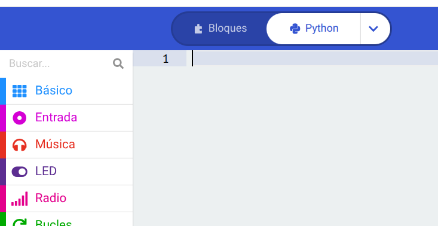
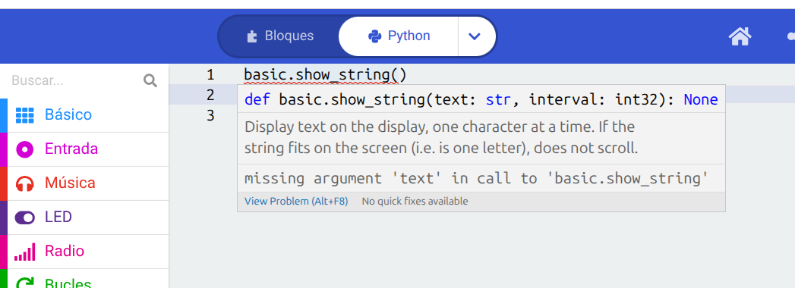
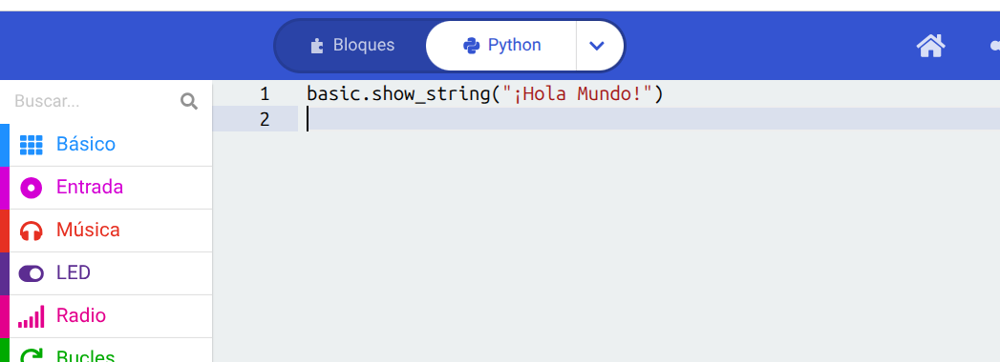
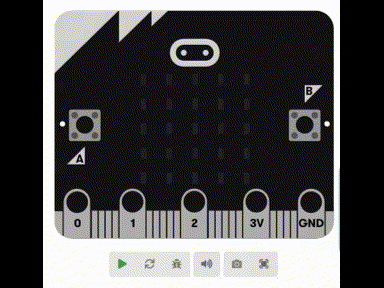

🐍 Tu primer "Hola Mundo" en MakeCode (Con Python)
🐍 Tu primer "Hola Mundo" en MakeCode (Con Python)
¡Buenas! Si ya dominás los bloques, llegó el momento de dar el salto a la programación real escrita. Vamos a hacer la misma tradición milenaria del "Hola Mundo", pero esta vez escribiendo líneas de código en Python, uno de los lenguajes más usados del mundo. ¡Vas a ver que no muerde!
Pasos a seguir
1. Cambiar a modo Python
Abrí tu proyecto en la web de MakeCode. Si estás viendo los bloques de siempre, mirá arriba en el centro de la pantalla: vas a ver un botón que dice "Bloques" y al lado uno que dice "Python". Hacé clic en Python para pasar al editor de texto.

2. Entender la estructura básica
Vas a ver que los bloques desaparecieron y ahora tenés un lienzo en blanco para escribir (o quizás te aparezca algo de código por defecto). En Python no tenemos un bloque verde "al iniciar", sino que las instrucciones que escribamos se van a ejecutar de arriba hacia abajo, una tras otra.
3. Escribir el comando mágico
Hacé clic en el renglón número 1 del editor y escribí el comando para mostrar texto en la micro:bit. Tenés que tipear basic.show_string() (ojo que lleva un punto en el medio y todo en minúsculas).
4. Poner tu saludo
Adentro de los paréntesis de basic.show_string(), tenés que poner tu mensaje entre comillas (para que Python entienda que son letras y no parte del código). Te tiene que quedar exactamente así: basic.show_string("¡Hola Mundo!")


5. ¡A probar el simulador!
¡Listo! Mirá el simulador de la izquierda. Igual que antes, vas a ver pasar tu mensaje en la pantalla de la placa. Acabás de escribir tus primeras líneas de código real. ¡Un viaje de ida!

💡 Tip: Si te da pereza escribir todo de memoria, ¡el panel del medio con categorías de colores sigue estando! Podés hacer clic en Basic y arrastrar el comando de texto directamente al editor, o usar el autocompletado que te sugiere las palabras mientras escribís.